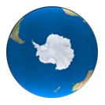

पृथ्वी का घूर्णन
उत्तरी ध्रुव के ऊपर से पृथ्वी का नजारा
इस परिप्रेक्ष्य से पृथ्वी का घूर्णन देखने के लिए चलाएं बटन पर क्लिक कीजिए।
फिर अन्य दृष्टिकोणों से पृथ्वी का घूर्णन देखने के लिए बाकी तस्वीरों पर क्लिक कीजिए।

विषुवत रेखा के तल से पृथ्वी का नजारा

उत्तरी ध्रुव के ऊपर से पृथ्वी का नजारा
दक्षिणी ध्रुव के ऊपर से पृथ्वी का नजारा
पहले टैब पर जाइए। बाईं ओर दी गयी सूची में डिजिटल गतिविधि बटन पर क्लिक कीजिए।